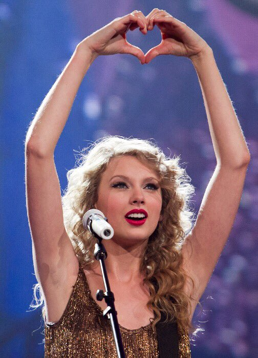

Singles: Love Story, White Horse, You Belong with Me, Fifteen, Fearless
Genre: Country
Taylor Swift's sophmore album,Fearless, was released in 2008. Fearless was an international breakthrough and huge commercial success for Swift. It debuted at No. 1 in the United States, and later became the best-selling album of 2009, selling over 3.2 million copies. The amount of commerical success this album had was career changing for Swift. The singles from this album are still some of her biggest hits to this day. Like Swift's debut album, Fearless's prominent themes are love and life from a high school teenage girl's perspective. The songs in Fearless examine those themes with a more nuanced and mature observation. Swift embraced country music's narrative songwriting to convey her coming of age.
